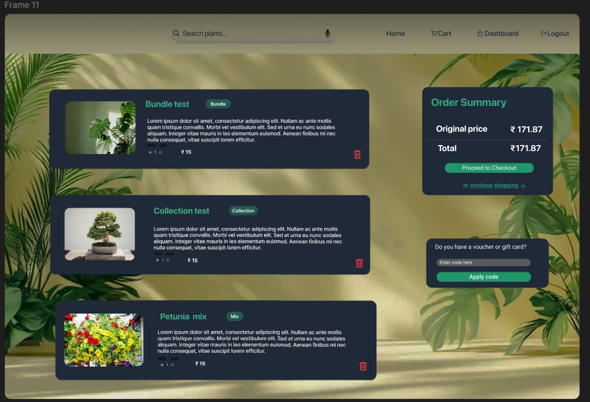

My projects reflect a balance between software engineering and hardware fundamentals. I enjoy translating
theoretical concepts into functional systems—whether it’s implementing algorithms, modeling digital circuits,
or optimizing data structures. Each project is built with an emphasis on correctness, clarity, and verification,
showcasing my commitment to high-quality engineering and continuous learning.
Hardware project
Bad posture detection using Arduino
Developed an intelligent Bad Posture Detection System designed to monitor user posture in real time
and provide corrective alerts to prevent long-term strain or discomfort. The system analyzes body alignment
using pattern recognition and predefined posture rules, identifying slouching, neck bending, or asymmetrical
sitting positions. It delivers timely feedback to encourage healthy posture habits, improving ergonomics and
reducing the risk of posture-related issues.
Hardware design
Software project
Encryption key genaration for encrypting a file
This project encrypts text files using a randomly generated key that shifts each character through a custom database.
The same key is required for decryption, ensuring only authorized users can recover the original content. It demonstrates
basic symmetric encryption, file handling, and secure key-based data transformation.
Made a health awareness app called "VHealthy" in the codechef hackathon.
This project we tried to make a website to track your daily calories, medicine reminder and other daily health reminder.
Made a design file in Figma .
Tried to replicate a online shop based selling indoor plants for decoration and other purpose.
